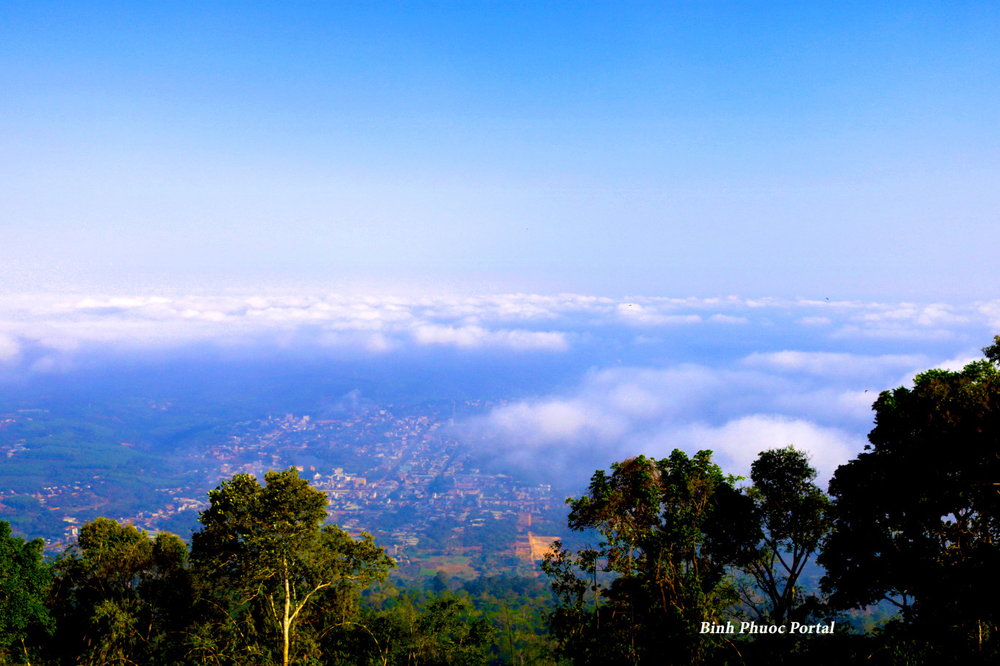
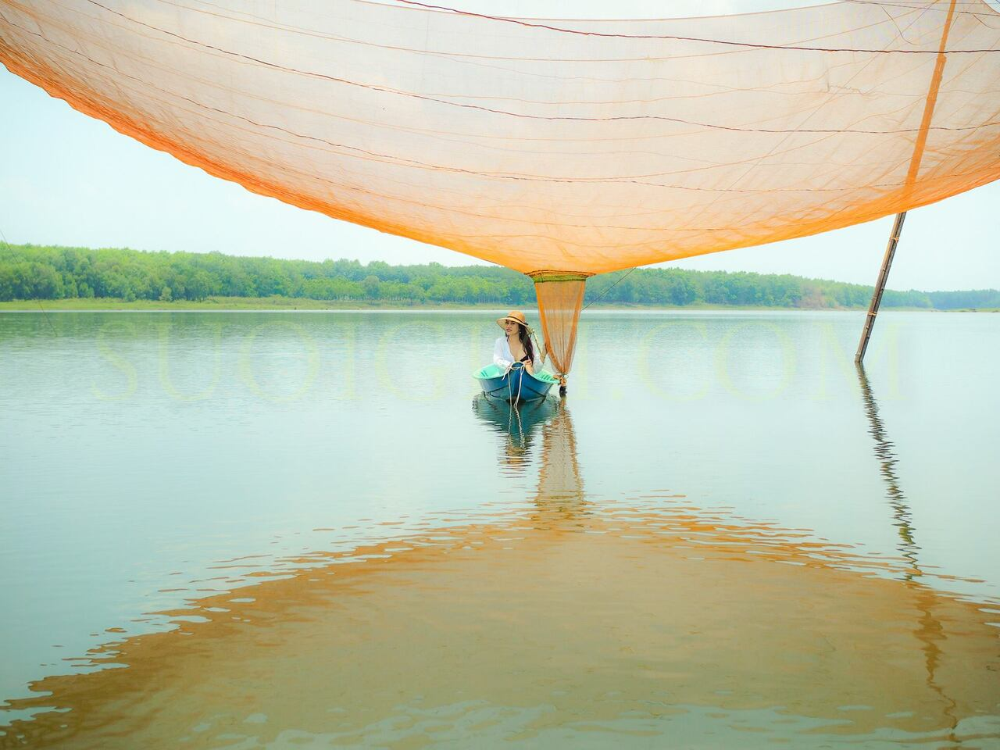

Top 5 địa điểm
5. Núi Bà Rá Phước Long
Núi Bà Rá là ngọn núi cao nhất của Bình Phước, thuộc địa phận hai phường Sơn Giang và Thác Mơ, thị xã Phước Long của tỉnh. Ngọn núi này nằm cách TP HCM 180 km (đi theo quốc lộ 14). Đây là ngọn núi cao thứ ba ở Nam Bộ và là đích đến của rất nhiều trekking, phượt thủ.

Từ trên đỉnh núi, bạn có thể nhìn thấy toàn cảnh thiên nhiên Thác Mơ cùng những vùng, huyện lân cận yên bình hiền hòa dưới chân núi.
Hiện nay, núi Bà Rá có hệ thống cáp treo cho du khách trải nghiệm ngắm nhìn toàn cảnh ngọn núi từ trên cao bao gồm phường Thác Mơ xinh đẹp, toàn hồ Long Thủy, hồ thủy điện Thác Mơ hòa quyện vào núi rừng.
 Những ngày đẹp trời, mây bay nhởn nhơ, sương khói mờ ảo, ngồi trên cáp treo ngắm nhìn buổi bình minh hay chiều tà du khách sẽ tận hưởng những giọt sương nơi vùng núi lãng đãng rơi lấm tấm trên tóc, đậu trên vai áo..